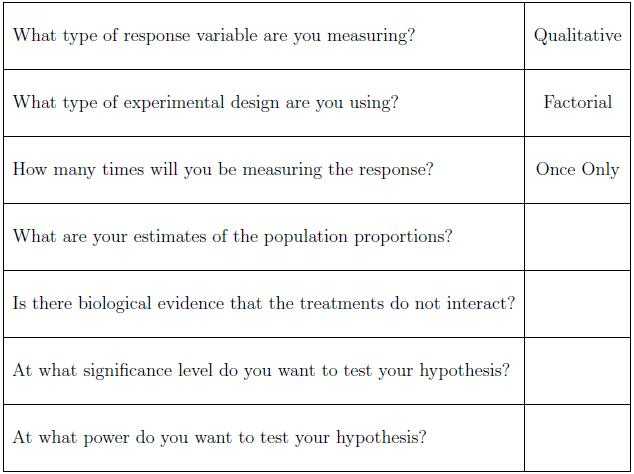

Let's summarize what we know so far. Jill is taking independent random samples from her target population of mice. One of the groups will receive one treatment (call it treatment A), another group will receive treatment B, and the third group will receive both treatment A and treatment B. Then she observes whether or not each mouse gets the disease. The sample size formula for this type of design is much more complicated. Hence it is our recommendation that Jill schedule a consultation with a statistician. Some things that Jill should think about and some information that she will need prior to her consultation are provided in the following checklist.

-- ErinEsp - 13 Mar 2010